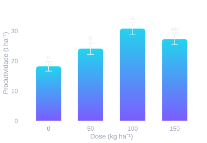
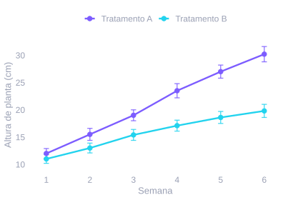
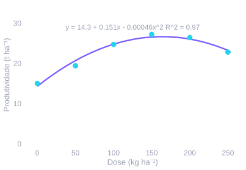
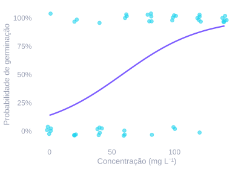
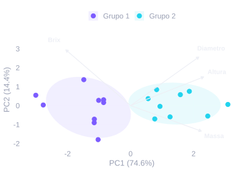
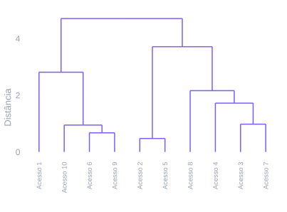
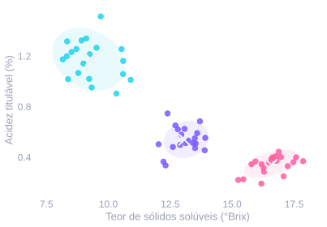

Crio aplicações em R e Shiny para pesquisa agronômica, laboratório e gestão institucional —
da análise estatística de experimentos aos relatórios prontos para publicação.
Cinco aplicações Shiny em produção no Posit Connect Cloud, cada uma resolvendo um problema real de dados.
Plota
Gráficos elegantes para a pesquisa agronômica
Barras, linhas, interação, regressão e boxplot com fonte, cor e tamanho sob medida.
Estatística embutida, painéis com múltiplos gráficos e exportação em TIFF, PNG, PDF, SVG e EPS
prontos para artigos e apresentações.
Cole os pontos lidos no laboratório e veja a reta, a equação y = bx + a e o R²
se atualizarem a cada edição. Feito para conferir rapidamente o ajuste de uma curva de análise.
ANOVA para DIC, DBC, esquema fatorial, parcelas subdivididas e subsubdivididas.
Testes de médias (Tukey, Duncan, Scott-Knott e mais), desdobramento de interações
e relatórios em PDF e HTML prontos para entrega.
Registro e acompanhamento de entregas institucionais
Autenticação por SIAPE, lançamento mensal em matriz, controle por ciclo anual,
relatórios filtráveis e painel administrativo — com PostgreSQL e auditoria de ações.
Organize, converta e compare amostras de cor por coordenadas CIELAB ou CIELCH,
com agrupamento de repetições, diferença ΔE (CIEDE2000) e relatório em PDF com um clique.
Um agrônomo que caiu de cabeça na estatística — e não quis guardar isso só pra mim.
Todo estudante de agronomia passa por isso: monta o experimento, coleta os dados e chega na hora
da análise de variância. É quase um rito de passagem — e também onde mais gente trava. Montar a
tabela certa, escolher o teste de médias, ler o gráfico sem se perder. O R faz tudo isso de um jeito
bonito, mas nem todo mundo tem tempo, paciência ou vontade de aprender a programar só pra chegar lá.
Minha formação em Administração, depois em Engenharia Agronômica e um doutorado em Fitotecnia foram
colocando a estatística cada vez mais no meu caminho. Hoje atuo na Universidade Federal da Paraíba,
em Areia — mas boa parte do que sei sobre análise de dados veio de fora de sala de aula: de mais de
90 pessoas que já ajudei a entender os próprios dados, em temas que vão de experimentos com melão e
melancia a epidemiologia, enfermagem e química, passando por mais de meia dúzia de universidades
públicas pelo Brasil.
Cada "como eu monto isso no R de novo?" repetido virou motivação pra transformar ajuda pontual em
ferramenta permanente. Foi daí que nasceram o Plota, o Ranova, o Croma: pego o que o R sabe fazer de
melhor e deixo numa tela que qualquer pessoa usa direto do navegador, sem instalar nada e sem
escrever uma linha de código.
90+
pessoas atendidas
600+
relatórios entregues
~2 mil
scripts de análise escritos
6+
universidades públicas atendidas
Na prática, isso vira pergunta concreta: uma dose de adubo aumenta a produtividade de verdade, ou é
só ruído da parcela? Um produto realmente reduz a germinação de uma praga, ou a diferença não passa
de acaso? Quais variáveis de qualidade do fruto andam juntas, e dá pra resumir uma dúzia delas em duas
dimensões que fazem sentido? Acessos parecidos formam grupos naturais, ou cada um é um caso à parte?
Pra essas perguntas entram ANOVA com o teste de médias certo, regressão linear e não linear, regressão
logística quando a resposta é sim ou não, componentes principais e análise de cluster quando são
muitas variáveis de uma vez — sem falar nos testes não paramétricos, pra quando os pressupostos não
seguram. Parte considerável sai pronta do Plota e do Ranova; o
resto continua no meu fluxo de trabalho em R, disponível sob consultoria. Alguns exemplos ilustrativos
(dados fictícios) do tipo de gráfico que cada análise produz:
Barras com erro e letras de Tukey

Uma dose aumenta a produtividade de verdade, ou é ruído da parcela? Comparação de médias com teste de significância — como o Ranova e o Plota geram automaticamente.
Linhas com erro, dois grupos

Dois tratamentos evoluem de formas diferentes ao longo do tempo? Saída direta do Plota, com erro-padrão em cada ponto.
Ajuste de regressão

Qual a dose de máxima eficiência, e qual curva explica melhor a resposta? Linear ou quadrática aqui — o Plota também ajusta cúbica, logarítmica e LOESS, e mostra qual se encaixa melhor nos seus dados.
Regressão logística

Germinou ou não germinou? Sobreviveu ou não? Quando a resposta é sim/não, a regressão logística estima a probabilidade em função da dose. Parte do meu trabalho de consultoria.
Componentes principais (PCA)

Uma dúzia de variáveis medidas, uma pergunta só: qual é o padrão? O biplot resume tudo em duas dimensões e mostra, pelos autovetores, qual variável puxa pra que direção. Ler esse resultado direito tem ciência própria — é exatamente o tipo de análise que costumo destrinchar em consultoria.
Cluster hierárquico

Quem se parece com quem, e o quanto? O dendrograma agrupa por similaridade e mostra a que distância cada grupo se separa. Onde "cortar" a árvore muda a resposta — decisão que vale conversar antes de bater o martelo.
Agrupamento k-means

Quantos grupos existem de verdade, e onde fica o centro de cada um? O k-means define os grupos pela distância até o centroide (marcado com ×). Escolher o número certo de grupos não é chute — se seus dados pedem esse tipo de leitura, converse comigo.